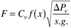
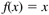
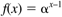
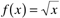
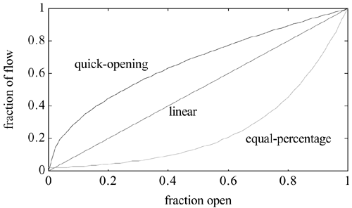

| [ Team LiB ] |
|
M15.3 Control ValvesThe relationship for flow through a valve is  where F is the volumetric flow rate, Cv is the valve coefficient, x is the fraction of valve opening, DPv is the pressure drop across the valve, s.g. is the specific gravity of the fluid, and f(x) is the flow characteristic. Three common valve characteristics are linear, equal-percentage, and quick-opening. For a linear valve,  For an equal-percentage valve,  For a quick-opening valve  The three characteristics are compared in Figure M15-5. Figure M15-5. Flow characteristics of control valves. a = 50 for equal-percentage valve. At this point it is reasonable to ask why we would ever want a valve characteristic that is not linear. After all, it seems reasonable that we would want the increase in flow to be linearly related to the increase in valve opening. Think about the orifice plate nonlinearity. If a square root extractor is not used, then the orifice plate gain is low at low flow rates and high at high flow rates [see Equation (M15.11)]. Notice that the quick-opening valve has a high gain at low flow rates and a low gain at high flow rates, exactly the opposite of the orifice plate. Since the flowmeter and control valve are both elements in a control loop, the overall gain of the loop may be relatively unchanged by combining the nonlinearity of the direct-acting valve with the nonlinearity of the orifice plate flowmeter. This is probably less important in this day and age because square root extractors or computer computation of the actual flow rate can compensate for the orifice plate nonlinearity. A quick-opening valve is then no longer necessary. We discuss this because a number of older plants still have old analog equipment, which may not have nonlinear compensation (e.g., square root extraction) for the orifice plate. Perhaps a process was originally designed with the direct-acting valve and an orifice plate flowmeter with square root extraction. If a recent "retrofit" (installation of new equipment) to change the control instrumentation involved adding nonlinear compensation (square root extraction, etc.) but did involve the replacement of the control valve, then the overall loop gain could change tremendously as a function of the flow rate. These thoughts may help you when you are troubleshooting a control problem. Notice that the curves in Figure M15-5 are based on a constant pressure drop across the valve. This may be reasonable, for example, if the pressure drop through a piping system was negligible and all the pressure drop was due to the valve. In this case, a linear valve is desirable because there is a linear relationship between the valve position and the actual flow rate. There are many systems, however, where the pressure drop due to piping is a significant portion of the pressure drop through the system and the pressure drop through the valve is not constant, and thus it may be desirable to use a nonlinear valve. This is shown more clearly in the next section. |
| [ Team LiB ] |
|